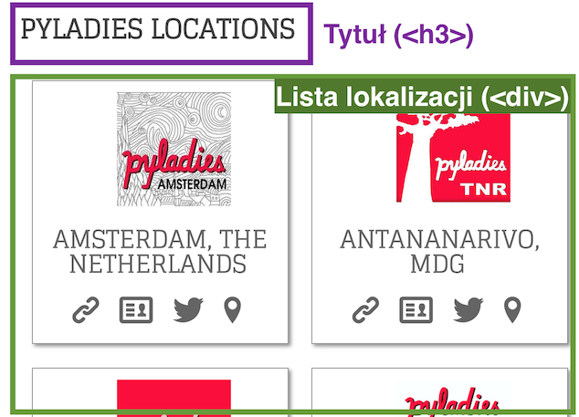

Web scraping
czyli posiądź moc Internetu i wykorzystaj ją do swoich celów
Autorzy: Anna Wszeborowska, Rafał Stożek
prezentacja na githubieInstalacja
pip install requests
pip install beautifulsoup4
Test instalacji w interpreterze Pythona
import requests
from bs4 import BeautifulSoup
Web scraping?
A komu to potrzebne?
- Internet - ogromne źródło informacji, które chcemy odfiltrować / pobrać / przetworzyć
- szybciej i skuteczniej zrobimy to automatycznie
Przykłady:
- scrapują wyszukiwarki (np. Google), także wyszukiwarki sprofilowane:
- Skyscanner.net (bilety lotnicze)
- Booking.com (hotele)
- Transportoid.net (rozkład jazdy autobusów)
Dlaczego w Pythonie?
- duża liczba dostępnych bibliotek
- język skryptowy - szybko i łatwo napiszemy oraz zmodyfikujemy kod
- stale rosnąca liczba narzędzi open-source'owych dzięki aktywnej społeczności pythonowej
(udostępnij także swój kod! :)
HTTP
Protokół HTTP (ang. Hypertext Transfer Protocol) to zbiór zasad i standardów przesyłania dokumentów w sieci WWW. Jest podstawą komunikacji serwerów WWW z klientami, określając znormalizowany format zapytań i odpowiedzi.
Request
Przykładowe zapytanie do serwera o przesłanie pliku:
GET /index.html HTTP/1.1
Dodatkowe nagłówki
Pusty wiersz
prośba o zwrócenie dokumentu o URI /index.html zgodnie z protokołem HTTP/1.1
Metody HTTP (do wersji HTTP/1.0):
- GET - żądanie powinno tylko zwrócić zasób wskazany przez URI i nie mieć innego efektu
- HEAD - żądanie jak GET, ale pobiera tylko informacje o zasobie, bez pobierania treści
- POST - żądanie przyjęcia danych przesłanych od klienta do serwera (np. wysłanie zawartości formularza)
W specyfikacji HTTP/1.1 dodano 5 nowych metod: OPTIONS, PUT, DELETE, TRACE oraz CONNECT.
Response
Przykładowa odpowiedź serwera:
HTTP/1.1 200 OK
Date: Thu, 16 Oct 2014 00:20:28 GMT
Content-Type: text/html; charset=UTF-8
Content-Length: 53
Pusty wiersz
Zawartość pliku
Pierwsza linia - Status-line: wersja protokołu, kod odpowiedzi, tekstowy opis kodu
Kody odpowiedzi
- 1xx: Informational - kody informacyjne (prowizoryczna odpowiedź, składająca się z linii statusu oraz opcjonalnych nagłówków); oznczają, ze żądanie zostało otrzymane i informują czy wysyłanie dalszych zapytań jest możliwe
- 2xx: Success - żądana akcja została otrzymana, zrozumiana i prawidłowo wykonana
- 3xx: Redirection- muszą być podjęte dalsze czynności, aby wykonać żądanie i uzyskać odpowiedź
- 4xx: Client Error - klient wysłał niepoprawne żądanie lub nie może zostać spełnione
- 5xx: Server Error - błąd serwera podczas przetwarzania poprawnego żądania
Częste kody odpowiedzi dla każdej klasy:
- 100 Continue - informacja, że serwer otrzymał wysłaną część zapytania i nie została ona odrzucona; klient powinien kontynuować dalsze wysyłanie zapytania
- 200 OK - zasób jest dostępny i zostanie przesłany
- 304 - Not Modified - strona jest taka sama jak przechowywana w cache'u klienta, więc z niego zostanie pobrana
- 403 Forbidden - zapytanie było poprawnie zrozumiane przez serwer, ale serwer odmawia udostępnienia zasobu klientowi
- 404 Not Found - serwer nie odnalazł zasobu odpowiadającego danemu URI
- 503 Service Unavailible - serwer nie jest aktualnie w stanie zrealizować zapytania (np. z powodu czasowego przeciążenia lub prac administracyjnych)
Więcje informacji: RFC 2616
Bibiolteka requests
Prosta i przyjazna użytkownikowi biblioteka na licencji Apache2.
Wprawdzie biblioteka standardowa Pythona zawiera moduł urllib2 pozwalający na obsługę komunikacji HTTP, jednak wykonanie nawet najbardziej podstawowych zadań przy jego użyciu wymaga dużego nakładu pracy.
import urllib2
gh_url = 'https://api.github.com'
req = urllib2.Request(gh_url)
password_manager = urllib2.HTTPPasswordMgrWithDefaultRealm()
password_manager.add_password(None, gh_url, 'user', 'pass')
auth_manager = urllib2.HTTPBasicAuthHandler(password_manager)
opener = urllib2.build_opener(auth_manager)
urllib2.install_opener(opener)
handler = urllib2.urlopen(req)
print handler.getcode()
print handler.headers.getheader('content-type')
import requests
r = requests.get('https://api.github.com', auth=('user', 'pass'))
print r.status_code
print r.headers['content-type']
requests w swojej zwięzłości i prostocie jest tym, czego oczekujemy od Pythona
Tworzenie zapytań
- Zaimportowanie modułu
import requests - Pobranie zawartości strony metodą GET:
r = requests.get('http://pyladies.com/') - Przekazanie parametrów URL:
Widzimy, że URL został poprawnie zakodowanypayload = {'key1': 'value1', 'key2': 'value2'} r = requests.get("http://httpbin.org/get", params=payload) print(r.url)http://httpbin.org/get?key2=value2&key1=value1
- Wysłanie danych formularza metodą POST:
payload = {'key1': 'value1', 'key2': 'value2'} r = requests.post("http://httpbin.org/post", data=payload) - Pobranie nagłówków odpowiedzi:
r = requests.head("http://httpbin.org/get")
Czytanie odpowiedzi serwera
- Pobranie treści strony:
import requests r = requests.get("http://isitfriday.info/") r.text # tekst (kodowanie można ustawić zmieniając r.encoding) r.content # binarnier = requests.get('https://api.github.com/events') r.json() - Sprawdzenie kodu odpowiedzi:
>>> r.status_code200>>> r.status_code == requests.codes.okTrue
- Pobranie nagłówków odpowiedzi w postaci słownika:
>>> r.headers{ 'content-encoding': 'gzip', 'transfer-encoding': 'chunked', 'connection': 'close', 'server': 'nginx/1.0.4', 'x-runtime': '148ms', 'etag': '"e1ca502697e5c9317743dc078f67693f"', 'content-type': 'application/json' }
Ćwiczenie
Napisz skrypt, który wypisze Twoje IP.
Wykorzystaj w tym celu treść zwracaną przez http://httpbin.org/ip
Dokumentacja biblioteki requests jest dostępna pod adresem: http://docs.python-requests.org/
Z czego składa się strona internetowa?
Z klocków.
Klocków ...
I jeszcze mniejszych klocków.
Za pomocą jakiej struktury możemy to przedstawić?
Drzewo. Trochę genealogiczne.
DOM (Document Object Model)
- Struktura drzewa
- każdy element ma rodzica (poza tym na samej górze)
- każdy element (prawie) może mieć jedno lub więcej "dzieci"
- zupełnie jak ta lista
- Elementy mają różne atrybuty
- obrazek - adres, wysokość, szerokość, obramowanie
- paragraf - rozmiar czcionki, kolor, marginesy
- i inne ;)
HTML
HyperText Markup Language
Lub po ludzku - sposób w jaki zapisujemy tekstowo nasze drzewo elementów
Wygląda tak
Lub w formie drzewka
Tagi (zwane również elementami lub gałęziami)
- Przykładowy tag, (prawie) zawsze musi być zamknięty
Niektóre nie muszą (np. obrazek):content Hello world!

- Możemy też wstawiać komentarze:
Podstawowe elementy
Wstawienie obrazka (obrazków nie trzeba domykać za pomocą </img>)

Paragraf tekstu:
Tutaj wstawić długi paragraf tekstu
Linki:
GoogleLinki + obrazki:

Klasy
Mój kwadracik
Dodajmy trochę CSS
.my-square {
background: red;
color: white;
padding: 10px;
text-align: center;
}
Wszystko razem
Narzędzia developerskie
Biblioteka Beautiful Soup
Biblioteka do wyciągania danych z plików HTML oraz XML. Wygodne, 'pythonowe' API umożliwia nawigowanie, przeszukiwanie oraz modyfikowanie drzewa dokumentu.
- Tworzenie obiektu
BeautifulSoup, czyli reprezentacji drzewiastej dokumentu
(na przykładzie http://isitfriday.info/)html_doc = """ <!DOCTYPE html> <html lang="en-US"><head><meta charset="UTF-8" /><title>Is it friday? | isitfriday.info</title></head> <body><div style="margin: 30px; text-align: center;"><h1>Is it friday?</h1><div style="margin-top: 20px; font-size: 13em;">No</div><br /><div id="impressum" style="margin-top: 30px; font-size: 10px;">another shiny project by <a href="https://nekudo.com/">nekudo.com</a></div></div></body> </html> """from bs4 import BeautifulSoup soup = BeautifulSoup(html_doc) print(soup.prettify())
<!DOCTYPE html>
<html lang="en-US">
<head>
<meta charset="utf-8"/>
<title>
Is it friday? | isitfriday.info
</title>
</head>
<body>
<div style="margin: 30px; text-align: center;">
<h1>
Is it friday?
</h1>
<div style="margin-top: 20px; font-size: 13em;">
No
</div>
<br/>
<div id="impressum" style="margin-top: 30px; font-size: 10px;">
another shiny project by
<a href="https://nekudo.com/">
nekudo.com
</a>
</div>
</div>
</body>
</html>
Nawigowanie po drzewie
>>> soup.title<title>Is it friday? | isitfriday.info</title>
>>> soup.title.stringu'Is it friday? | isitfriday.info'
>>> soup.div['style']'margin: 30px; text-align: center;'
>>> soup.find_all('div')[<div style="margin: 30px; text-align: center;"><h1>Is it friday?</h1><div style="margin-top: 20px; font-size: 13em;">No</div><br/><div id="impressum" style="margin-top: 30px; font-size: 10px;">another shiny project by <a href="https://nekudo.com/">nekudo.com</a></div></div>, <div style="margin-top: 20px; font-size: 13em;">No</div>, <div id="impressum" style="margin-top: 30px; font-size: 10px;">another shiny project by <a href="https://nekudo.com/">nekudo.com</a></div>]>>> soup.find(id="impressum")<div id="impressum" style="margin-top: 30px; font-size: 10px;">another shiny project by <a href="https://nekudo.com/">nekudo.com</a></div></div>Praktyczne przykłady:
>>> for link in soup.find_all('a'): ... print(link.get('href'))https://nekudo.com/>>> print(soup.get_text())Is it friday? | isitfriday.info Is it friday? No another shiny project by nekudo.comWięcej informacji w dokumentacji bs4
Ćwiczenie
Ze strony PyLadies (http://www.pyladies.com/locations/) wypisz wszystkie lokalizacje lokalnych społeczności
Zadanie
Napisz program, który wyszukuje oferty na grouponie (np. oferty sushi), a następnie wysyła je mailem.
smtplib oraz email
import smtplib from email.mime.text import MIMEText from_addr = 'my@domain.com' password = 'mypassword' smtp_server = 'smtp.server.com' smtp_port = 465 recipient = 'your@domain.com' subject = 'email subject' message = 'this is my email message' msg = MIMEText(message, 'html', 'utf-8') msg['Subject'] = subject msg['From'] = from_addr msg['To'] = recipient s = smtplib.SMTP_SSL(smtp_server, smtp_port) s.login(from_addr, password) s.sendmail(from_addr, [recipient], msg.as_string()) s.quit()